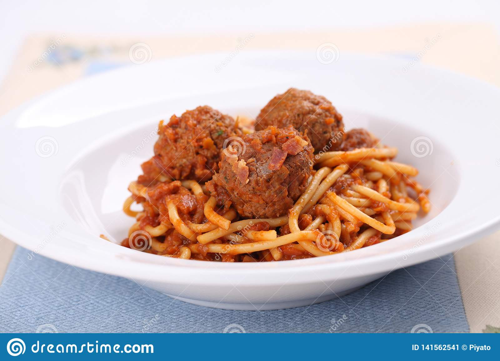

Spaghetti & Meatballs

A hearty meal the whole family will enjoy
This dish will take about 1 hour to cook
Ingredients
- 1/2 lb Ground Meat
- 1/2 Cup Panko Breadcrumbs
- 4 Cloves Garlic Minced
- 2 Cups and 1 Tsp Salt
- 1 Tsp Ground Black Pepper
- 1 Tsp Ground Red Pepper
- 1 Egg
- 1/4 Cup Grated Parmesan
- 1/4 Cup Parsley
- 1 Can San Marzano Tomatoes
- 2 Basil Leaves
- 1/2 lb Spaghetti
- 3 Tbsp Olive Oil
Instructions
Spaghetti
- Bring a large pot of water to a boil
- Add the 2 cups of salt to the water and let dissolve
- Add the 1/2 lb of spaghetti to the boiling water
- Make sure the spaghetti is not sticking to the bottom of the pot for the first few minutes by stirring
- Cook spaghetti until al dente, about 10 minutes
- Drain the spaghetti, saving 1 cup of the cooking water for the sauce
Meatballs
- Combine the rest of the salt, black and red pepper, minced garlilc, parsley, parmesan and breadcrumbs in a bowl
- Add the ground beef to the mixture and combine thoroughly
- Fold the 2 eggs into the ground beef mixture
- Add the 3 tbsp of olive oil to a pan and bring to medium heat
- Form 2 inch spheres from the ground beef mixture to make the meatballs, and place them in the pan to sear
- Once the meatballs have been seared on all sides, take them out of the pan and set aside
Sauce
- Open the can of San Marzano tomatoes, and add use a spoon to crush the tomatoes inside of the can
- Once the tomatoes have been crushed, empty the can into the same sauce pan and oil that you cooked the meatballs in
- Add the 1 cup of water saved from cooking the spaghetti
- Add the 2 Basil leaves and cook for 2 minutes
- Add the meatballs, bring the sauce to a boil, then cover, turn the heat to low and let simmer for 5 minutes
- Add the spaghetti to the sauce, or serve side-by-side
Return to Homepage